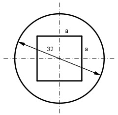

Aufgabe 225 Wie groß ist die Seite a der quadratischen Aussparung, wenn sich der Querschnitt der Welle halbieren soll?  AWelle = 162 mm * π = 803,8 mm2 AQuadrat = AWelle/2 = 401,9 mm2 a2 = 401,9 mm2 |√ a = 20 mm
Aufgabe 225 Wie groß ist die Seite a der quadratischen Aussparung, wenn sich der Querschnitt der Welle halbieren soll?
